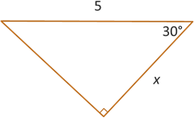

Right Triangle Trigonometry
Trigonometric Functions
Trigonometric Functions
There are two triangles that contain angles and sides that we will frequently use when computing the values of our trigonometric functions. They are the 30-60-90 triangle and the 45-45-90 triangle, named after the angles in each triangle.
The above video combines some geometry and algebra to determine the lengths of the sides of a 30-60-90 right triangle and 45-45-90 right triangle where the hypotenuse is 1. The result is illustrated below.
Because we are looking at the ratios of two sides when computing are trig functions, it turns out that we get the same ratios regardless of the size of the triangle. If the angles are still then same, then we have similar triangles and so the ratios remain the same. This means our trig functions have unique output values (which means they are functions), and these special and frequently used values are summarized below.
It would be helpful and worthwile to memorize these values now because we will be using them all semester long. You will be expected to know them on the upcoming tests.
Example: Find the exact value of \(x\).
We are given the acute angle of 30° with an adjacent side of length \(x\) and hypotenuse of length 5. Having adjacent and hypotenuse (think CAH in SOHCAHTOA) means we want to use cosine.
\[\begin{align*} \cos(\theta) &= \frac{\text{adj}}{\text{hyp}} \\ \cos(30^{\circ}) &= \frac{x}{5} \end{align*}\]We just learned that \(\cos(30^{\circ}) = \frac{\sqrt{3}}{2}\), so plug \(\frac{\sqrt{3}}{2}\) into the left side of the equation and solve the proportion by cross multiplying and dividing.
\[\begin{align*} \frac{\sqrt{3}}{2} &= \frac{x}{5} \\ 2 \cdot x &= 5 \cdot \sqrt{3} \\ x &= \frac{5\sqrt{3}}{2} \end{align*}\]We will also work frequently with the trigonometric functions using angles given in radians. More on this will come later, but for now, let's convert our common angles from degrees to radians. If you need a refresher on how to convert from degrees to radians, we discussed this in a previous lesson.
Self-Check #2: What is the value of \(\sin\left(\frac{\pi}{6}\right)\)? (Select the most appropriate response.)
(Answer: A) -- If we convert the \(\frac{\pi}{6}\) angle into degrees, then we can use the trig function values given in the table above. The result is \(\sin\left(\frac{\pi}{6}\right) = \sin(30^{\circ}) = \frac{1}{2}\).
Self-Check #3: What is the value of \(\tan\left(\frac{\pi}{3}\right)\)? (Select the most appropriate response.)
(Answer: C) -- If we convert the \(\frac{\pi}{3}\) angle into degrees, then we can use the trig function values given in the table above. The result is \(\tan\left(\frac{\pi}{3}\right) = \tan(60^{\circ}) = \sqrt{3}\).
Self-Check #4: What is the value of \(\sec\left(\frac{\pi}{4}\right)\)? (Select the most appropriate response.)
(Answer: D) -- We observed earlier that secant is the reciprocal of cosine. So if we first find the value of \(\cos\left(\frac{\pi}{4}\right)\), then we can find \(\sec\left(\frac{\pi}{4}\right)\). If we also convert the \(\frac{\pi}{4}\) angle into degrees, then we can use the trig function values given in the table above. The result of this conversion step is \(\cos\left(\frac{\pi}{4}\right) = \cos(45^{\circ}) = \frac{\sqrt{2}}{2}\). Then finding the reciprical and simplifying gives us \(\sec\left(\frac{\pi}{4}\right) = \frac{2}{\sqrt{2}}= \frac{2 \cdot \sqrt{2}}{\sqrt{2} \cdot \sqrt{2}} = \frac{2\sqrt{2}}{2} = \sqrt{2}\).
©2025 M4thG33x (new window) Some Rights Reserved.